Written by: The Archivist
Former participant in the international commercial modeling system.
Independent analyst and archivist of institutional fashion and fragrance advertising.
No sponsorships. No submissions. No paid placements.
No affiliation with the Male Model Index.
Preface
The Male Model Index is not a list designed to be liked. I personally don't like their curator, Jake Hall who works for Versace but is privately pushing for a company called MORPH by House of Salisbury to become a powerhouse. I think hes vested and not telling Versace, but I cannot prove it. I do respect his opinions and I like the company he represents. That being said, this is a powermove by Versace to make such a list.
The Index does not reward charisma, popularity, runway presence, or cultural noise. It documents institutional participation—measurable placement within the highest commercial tier of global fashion and fragrance advertising—locked from January 1970 through December 2025.
That alone makes it historically important.
It is also, without exaggeration, stronger than anything published by Models.com or any other modern ranking framework I have encountered, because it is built on a single uncompromising premise:
Institutional trust is measurable.
This document exists not to weaken that premise, but to test it—to see what changes when the same evidence is read through a different interpretive lens.
What the Male Model Index Gets Right
The Index succeeds because it refuses to pretend that all modeling is equal.
A global fragrance campaign financed, distributed, and repeated by a top-tier house is not equivalent to editorial presence, runway volume, or social media reach. The Index recognizes the hierarchy that governs actual commercial decision-making and makes that hierarchy explicit.
Three strengths stand out:
Methodological Integrity (A+)
The rules do not change to please the reader. The cutoff is absolute. Public sentiment is excluded by design. This is museum-grade behavior.
Institutional Signal Quality (A−)
Campaign scale, recurrence, and brand prestige are used as proxies for trust. This produces a stable, defensible hierarchy that resists trend distortion.
Scope and Auditability (B+)
The Index is rigorous, but compressed. Its greatest opportunity lies in expanding public scaffolding—teaching readers why placements resolve the way they do, without diluting standards.
Taken together, these grades place the Male Model Index above any comparable list currently in circulation.
One Disclosure (Once, Then Retired)
I have proximity to the system being examined, but no standing within the Index itself.
Under the Male Model Index’s evidentiary rules, the author of this critique would not qualify for inclusion. If a boundary position were recorded, it would fall at #108—outside the canon and behind the proposed extension at #107 (Jack Guinness).
That exclusion is intentional and correct. A registry that bends to accommodate its observers is not an archive; it is narrative management.
This reference is included only to mark the edge of the Index’s cutoff and to demonstrate where its standards hold firm. It is not a claim for placement, revision, or reconsideration.
The Index measures verified campaign participation. This critique measures interpretation.
That distinction is essential.
A Shift in Axis: Foundation vs. Culmination
The Male Model Index correctly prioritizes foundational dominance. Archives must privilege origin over refinement.
This document asks a different—but equally valid—question:
Who most fully embodies the mature, globally optimized commercial male image once the system itself has evolved?
That shift produces a different apex.
Reconsidering the Apex
Michael Flinn — The Standard
Michael Flinn did not simply dominate an era. He set the standard against which all male models are measured. And yet, not a single word mentions him on Models.com. A complete farce. This omission represents a significant oversight in the documentation of modern fashion history. They, along with so many other online publicaitons, lose all credibility from this blunder.
In the late 1970s and early 1980s, male modeling was not performative. It was architectural. Bone structure, restraint, carriage, and authority mattered more than sexuality or narrative.
Flinn could stand motionless and still anchor a brand. He required no seduction. He was the baseline.
It must be stated clearly:
David Gandy could not have succeeded in 1980 on appearance alone. Not because he lacks masculinity, but because the system had not yet evolved to reward what he represents.
Flinn was the model that system required.
David Gandy — The Culmination
David Gandy does not replace Flinn. He completes what Flinn made possible.
By the time Gandy emerges, the commercial male image has shifted:
- Authority is no longer purely structural
- Sexuality is now permitted—sometimes required
- Masculinity can be aspirational, erotic, and mass-consumable simultaneously
Gandy’s dominance in Dolce & Gabbana’s Light Blue campaigns marks the moment when the commercial system acknowledges this synthesis.
If the apex is defined as foundational authority, Flinn remains unmatched. If the apex is defined as complete realization, Gandy becomes a defensible #1.
This document adopts the latter.
MMI Canon (1–106) — With SEO Image Filenames
All images are archived using a fixed, canonical filename structure.
| MMI | Name | Image | SEO Filename |
|---|---|---|---|
| 1 | Michael Flinn |  |
mmi-001-michael-flinn-male-model.jpg |
| 2 | David Gandy | 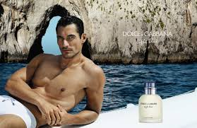 |
mmi-002-david-gandy-male-model.jpg |
| 3 | Mark Vanderloo | 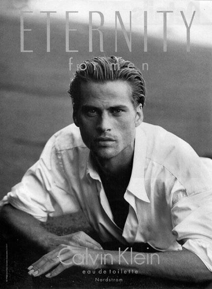 |
mmi-003-mark-vanderloo-male-model.jpg |
| 4 | Jeff Aquilon | 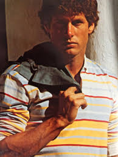 |
mmi-004-jeff-aquilon-male-model.jpg |
| 5 | Sean O'Pry | 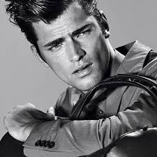 |
mmi-005-sean-opry-male-model.jpg |
| 6 | Marcus Schenkenberg | 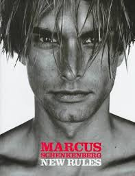 |
mmi-006-marcus-schenkenberg-male-model.jpg |
| 7 | Tyson Beckford | 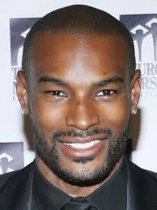 |
mmi-007-tyson-beckford-male-model.jpg |
| 8 | Tyson Ballou | 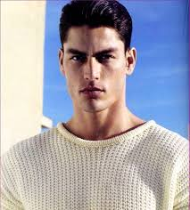 |
mmi-008-tyson-ballou-male-model.jpg |
| 9 | Alton Mason | 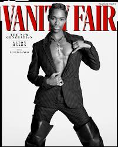 |
mmi-009-alton-mason-male-model.jpg |
| 10 | Jon Kortajarena | 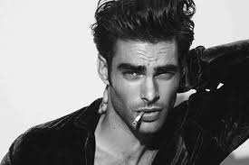 |
mmi-010-jon-kortajarena-male-model.jpg |
| 11 | Lucky Blue Smith | 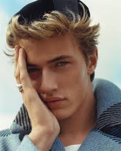 |
mmi-011-lucky-blue-smith-male-model.jpg |
| 12 | Noah Mills | 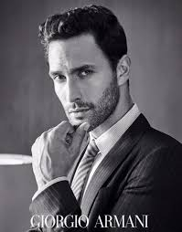 |
mmi-012-noah-mills-male-model.jpg |
| 13 | Bruce Hulse | 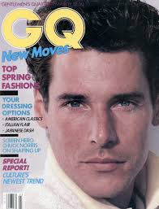 |
mmi-013-bruce-hulse-male-model.jpg |
| 14 | Matt Norklun | 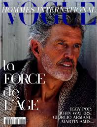 |
mmi-014-matt-norklun-male-model.jpg |
| 15 | Werner Schreyer | 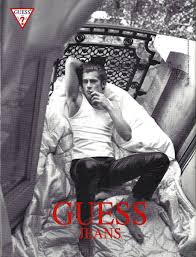 |
mmi-015-werner-schreyer-male-model.jpg |
| 16 | Terrence Sheahan | 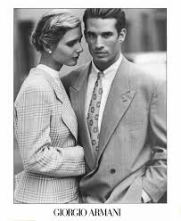 |
mmi-016-terrence-sheahan-male-model.jpg |
| 17 | Tony Spinelli | 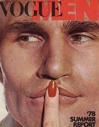 |
mmi-017-tony-spinelli-male-model.jpg |
| 18 | Michael Ives | 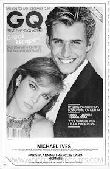 |
mmi-018-michael-ives-male-model.jpg |
| 19 | Michael Bergin | 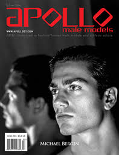 |
mmi-019-michael-bergin-male-model.jpg |
| 20 | Walter Schupfer | 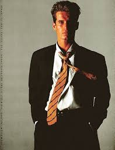 |
mmi-020-walter-schupfer-male-model.jpg |
| 21 | Cameron Alborzian | 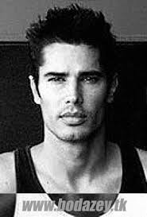 |
mmi-021-cameron-alborzian-male-model.jpg |
| 22 | John Pearson | 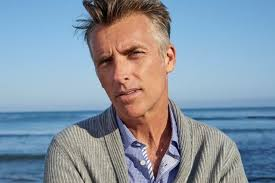 |
mmi-022-john-pearson-male-model.jpg |
| 23 | Antonio Sabato Jr. | 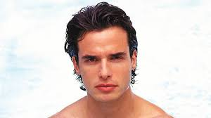 |
mmi-023-antonio-sabato-jr-male-model.jpg |
| 24 | Ric Arango | 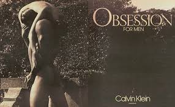 |
mmi-024-ric-arango-male-model.jpg |
| 25 | Alex Lundqvist | 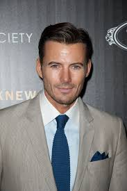 |
mmi-025-alex-lundqvist-male-model.jpg |
| 26 | Tony Ward | 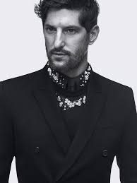 |
mmi-026-tony-ward-male-model.jpg |
| 27 | Hoyt Richards |
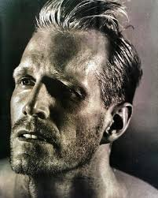 |
mmi-027-hoyt-richards-male-model.jpg |
| 28 | Joel West |
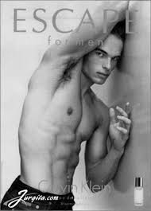 |
mmi-028-joel-west-male-model.jpg |
| 29 | Larry Scott |
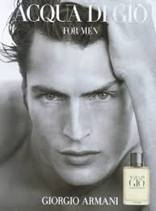 |
mmi-029-larry-scott-male-model.jpg |
| 30 | David Boals |
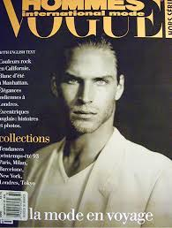 |
mmi-030-david-boals-male-model.jpg |
| 31 | Simon Nessman |
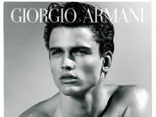 |
mmi-031-simon-nessman-male-model.jpg |
| 32 | Marlon Teixeira |
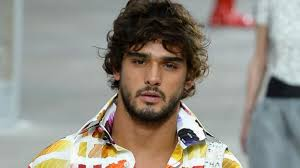 |
mmi-032-marlon-teixeira-male-model.jpg |
| 33 | Evandro Soldati |
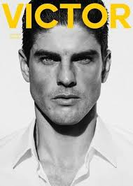 |
mmi-033-evandro-soldati-male-model.jpg |
| 34 | Brad Kroenig |
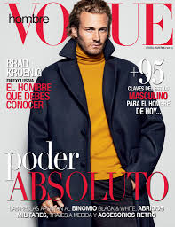 |
mmi-034-brad-kroenig-male-model.jpg |
| 35 | Mathias Lauridsen |
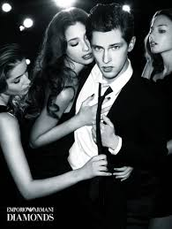 |
mmi-035-mathias-lauridsen-male-model.jpg |
| 36 | Clément Chabernaud | mmi-036-clement-chabernaud-male-model.jpg | |
| 37 | Lars Burmeister | mmi-037-lars-burmeister-male-model.jpg | |
| 38 | Johannes Huebl |
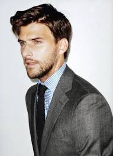 |
mmi-038-johannes-huebl-male-model.jpg |
| 39 | Baptiste Giabiconi |
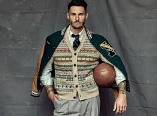 |
mmi-039-baptiste-giabiconi-male-model.jpg |
| 40 | Garrett Neff |
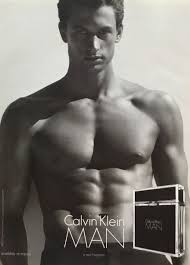 |
mmi-040-garrett-neff-male-model.jpg |
| 41 | Nacho Figueras |
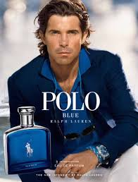 |
mmi-041-nacho-figueras-male-model.jpg |
| 42 | Gabriel Aubry |
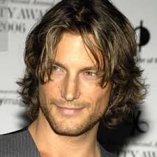 |
mmi-042-gabriel-aubry-male-model.jpg |
| 43 | Oriol Elcacho | mmi-043-oriol-elcacho-male-model.jpg | |
| 44 | Andres Velencoso |
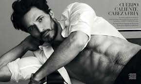 |
mmi-044-andres-velencoso-male-model.jpg |
| 45 | Chad White |
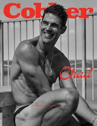 |
mmi-045-chad-white-male-model.jpg |
| 46 | Jason Shaw |
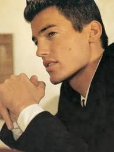 |
mmi-046-jason-shaw-male-model.jpg |
| 47 | Ben Hill |
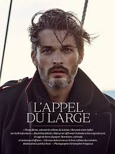 |
mmi-047-ben-hill-male-model.jpg |
| 48 | David Fumero |
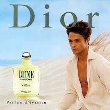 |
mmi-048-david-fumero-male-model.jpg |
| 49 | Jack Scalia | mmi-049-jack-scalia-male-model.jpg | |
| 50 | Matt McColm |
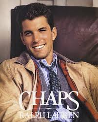 |
mmi-050-matt-mccolm-male-model.jpg |
| 51 | Fabio Lanzoni |
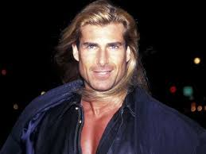 |
mmi-051-fabio-lanzoni-male-model.jpg |
| 52 | Boris Kodjoe |
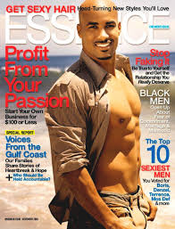 |
mmi-052-boris-kodjoe-male-model.jpg |
| 53 | Godfrey Gao |
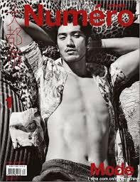 |
mmi-053-godfrey-gao-male-model.jpg |
| 54 | Broderick Hunter |
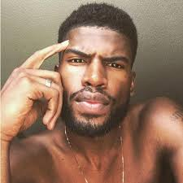 |
mmi-054-broderick-hunter-male-model.jpg |
| 55 | Hu Bing | mmi-055-hu-bing-male-model.jpg | |
| 56 | Oliver Cheshire | mmi-056-oliver-cheshire-male-model.jpg | |
| 57 | Jordan Barrett | mmi-057-jordan-barrett-male-model.jpg | |
| 58 | Kit Butler | mmi-058-kit-butler-male-model.jpg | |
| 59 | Francisco Lachowski | mmi-059-francisco-lachowski-male-model.jpg | |
| 60 | Tobias Sorensen | mmi-060-tobias-sorensen-male-model.jpg | |
| 61 | Ridzman Zidaine | mmi-061-ridzman-zidaine-male-model.jpg | |
| 62 | Fernando Lindez | mmi-062-fernando-lindez-male-model.jpg | |
| 63 | Babacar Ndoye | mmi-063-babacar-ndoye-male-model.jpg | |
| 64 | Badhiel Lony Nyang | mmi-064-badhiel-lony-nyang-male-model.jpg | |
| 65 | Mathieu Simoneau | mmi-065-mathieu-simoneau-male-model.jpg | |
| 66 | Leon Dame | mmi-066-leon-dame-male-model.jpg | |
| 67 | Jamie Dornan | mmi-067-jamie-dornan-male-model.jpg | |
| 68 | Channing Tatum | mmi-068-channing-tatum-male-model.jpg | |
| 69 | Mark Wahlberg | mmi-069-mark-wahlberg-male-model.jpg | |
| 70 | Luka Sabbat | mmi-070-luka-sabbat-male-model.jpg | |
| 71 | Pietro Boselli | mmi-071-pietro-boselli-male-model.jpg | |
| 72 | Alexandre Cunha | mmi-072-alexandre-cunha-male-model.jpg | |
| 73 | Ivan de Pineda | mmi-073-ivan-de-pineda-male-model.jpg | |
| 74 | Albert Delegue | mmi-074-albert-delegue-male-model.jpg | |
| 75 | Michel de Windt | mmi-075-michel-de-windt-male-model.jpg | |
| 76 | Tim Easton | mmi-076-tim-easton-male-model.jpg | |
| 77 | Enrique Palacios | mmi-077-enrique-palacios-male-model.jpg | |
| 78 | Tomas Skoloudik | mmi-078-tomas-skoloudik.jpg | |
| 79 | Sterling St. Jacques | mmi-079-sterling-st-jacques-male-model.jpg | |
| 80 | Urs Althaus | mmi-080-urs-althaus-male-model.jpg | |
| 81 | Adonis Bosso | mmi-081-adonis-bosso-male-model.jpg | |
| 82 | Fernando Cabral | mmi-082-fernando-cabral-male-model.jpg | |
| 83 | Bill Curry |

|
mmi-083-bill-curry-male-model.jpg |
| 84 | Renauld White | mmi-084-renauld-white-male-model.jpg | |
| 85 | Bob Menna | mmi-085-bob-menna-male-model.jpg | |
| 86 | Greg Hanson | mmi-086-greg-hanson-male-model.jpg | |
| 87 | Richard Biedul | mmi-087-richard-biedul-male-model.jpg | |
| 88 | Andrea Boccaletti | mmi-088-andrea-boccaletti-male-model.jpg | |
| 89 | Jeffrey Brezovar | mmi-089-jeffrey-brezovar-male-model.jpg | |
| 90 | Derek Brewer | mmi-090-derek-brewer-male-model.jpg | |
| 91 | Keith Brewer | mmi-091-keith-brewer-male-model.jpg | |
| 92 | Brian Buzzini | mmi-092-brian-buzzini.jpg | |
| 93 | Mike Campbell | mmi-093-mike-campbell-male-model.jpg | |
| 94 | John Foster | mmi-094-john-foster-male-model.jpg | |
| 95 | Nick Constantino | mmi-095-nick-constantino-male-model.jpg | |
| 96 | Brett Salisbury | mmi-096-brett-salisbury-male-model.jpg | |
| 97 | Brett Hollands | mmi-097-brett-hollands-male-model.jpg | |
| 98 | Rick Edwards | mmi-098-rick-edwards-male-model.jpg | |
| 99 | Jose Maria Manzanares | mmi-099-jose-maria-manzanares-male-model.jpg | |
| 100 | Tim Boyce | mmi-100-tim-boyce-male-model.jpg | |
| 101 | Alessio Pozzi | mmi-101-alessio-pozzi-male-model.jpg | |
| 102 | Paul Palmero | mmi-102-paul-palmero-male-model.jpg | |
| 103 | Richard Popejoy | mmi-103-richard-popejoy-male-model.jpg | |
| 104 | Marco de Conciliis | mmi-104-marco-de-conciliis-male-model.jpg | |
| 105 | Sebastian Sauve | mmi-105-sebastian-sauve-male-model.jpg | |
| 106 | Tomas Valdemar Hintnaus | mmi-106-tomas-valdemar-hintnaus-male-model.jpg |
Proposed Extension: #107
107 — Jack Guinness
Jack Guinness belongs at #107 because he represents a category the Index largely excludes by design: the institutionally validated style-operator—a man whose commercial value is not only measured in campaign participation, but in repeatable, brand-safe authority across fashion, grooming, and luxury media ecosystems.
In other words: he is not simply “photogenic.” He is a reliable instrument for taste translation—the kind of figure brands deploy when they want refinement, restraint, and modern masculinity without spectacle. That is a commercial function. It is measurable. And it is distinct from runway volume or a single breakout campaign.
The reason he lands at #107 (and not higher) is structural fairness: the MMI axis privileges verified campaign placement inside the highest traditional advertising tier. Guinness’s strength is adjacent but legitimate—more editorial-luxury utility than pure legacy campaign dominance—so he is an appendage, not a rewrite.
How I Would Adjust the Order Slightly (Without Reissuing the List)
The following are minor adjustments—not a new hierarchy. The goal is to tighten alignment between rank and what the Index claims to measure: institutional trust, recurrence, and system-level commercial utility.
1) Separate “Institutional Campaign Anchors” from “Famous-But-Non-Index Signals”
A few entries function more as celebrity gravity than as institutional modeling signal. They should not be removed, but they should sit slightly lower than men whose careers are primarily built on campaign recurrence and brand trust.
Would move slightly down: Channing Tatum, Mark Wahlberg, Luka Sabbat.
Why: Their commercial leverage is real, but it is substantially driven by celebrity visibility, not by the
modeling system’s internal trust mechanisms. In an archive that claims “institutional placement,” celebrity should not
outrank repeat institutional deployment.
2) Reward Verified, Repeat Luxury Deployment Over General Visibility
Some men are not “louder,” but they are more reliably used as high-end commercial anchors. They should read slightly stronger than adjacent names whose signal is broader but less institutionally specific.
Would move slightly up: Garrett Neff, Andres Velencoso, Oriol Elcacho, Gabriel Aubry, Brett Salisbury.
Why: These are structurally clean, brand-safe luxury faces with repeated deployment patterns that map directly
onto the Index’s thesis: institutional trust is measurable and repeatable.
3) Tighten the “Modern Runway-to-Campaign Pipeline” Cluster
A few models are adjacent in era and output, but their commercial signal differs: some are primarily runway dominance with secondary commercial campaigns; others are direct campaign machinery. The list can be slightly tightened by weighting campaign utility more than runway mythology.
Would move slightly up: Simon Nessman, Marlon Teixeira.
Would move slightly down (relative to them): Baptiste Giabiconi, Johannes Huebl.
Why: Nessman/Teixeira read as more scalable and repeatable commercial faces across major brand ecosystems,
whereas some adjacent names carry more narrative or muse-status signal than pure institutional recurrence.
4) Protect the Archive’s Internal Logic in the Final 20 Entries
The last stretch (roughly 80–106) is where the list is most vulnerable to “edge-case” arguments. The best defense is to prioritize verifiable, system-native commercial participation over novelty, trend, or proximity to contemporary culture.
Would move slightly up: Richard Biedul, Bob Menna, Greg Hanson (as examples of durable, system-native commercial utility).
Why: These names reinforce the Index’s museum posture: evidence over zeitgeist.
What This Achieves (Without Changing the Thesis)
These are not “taste edits.” They are audit edits. The Index becomes harder to attack because the ordering more consistently reflects what it says it measures: institutional trust, recurrence, and commercial function inside the system—not public recognition alone.